Mustang Cobra Terminator
El Cobra 2003 debutó en la primavera de 2002 con un motor V8 DOHC de 4,6 litros y 32 válvulas sobrealimentado que desarrollaba 390 hp (291 kW) y 390 lb⋅ft (530 N⋅m) de torque.El equipo de desarrollo de SVT, dirigido por John Coletti, lo nombró "Terminator": 22 y se realizaron numerosas mejoras en el tren motriz y la transmisión para manejar el aumento de potencia con respecto a la configuración del modelo anterior. Se utilizó un bloque de hierro fundido, en lugar de la unidad de aluminio Teksid anterior, con componentes internos más fuertes, incluidos pistones Zollner y bielas forjadas Manley con viga en H que los ingenieros de SVT modificaron con un orificio de engrase de pasador de muñeca.Estas mejoras fueron fundamentales para soportar los 8 psi (0,55 bar) de impulso entregados por el sobrealimentador de tipo raíces Eaton M-112 de serie.Otras mejoras incluyeron el uso de un volante de inercia de aluminio liviano conectado a una transmisión Tremec T-56 de seis velocidades , una relación de eje trasero de 3,55:1 y semiejes de 31 estrías más fuertes con brazos de control superior e inferior revisados.Estas modificaciones permitieron al Cobra ir de 0 a 60 mph en 4,5 segundos y hacer el cuarto de milla en 12,67 segundos a 110,11 mph. :Aunque está gobernado electrónicamente a una velocidad máxima de 153 mph, un Terminator Cobra de fábrica puede alcanzar una velocidad máxima de poco menos de 180 mph si se quita el gobernador. El Cobra 2003 contaba con mejoras visuales y funcionales diseñadas por Camilo Pardo, el diseñador jefe del superdeportivo Ford GT 2005-2006. : 24–5 Estas diferencias exteriores incluían una nueva fascia delantera con un alerón integrado y conductos de aire de freno delantero, una nueva fascia trasera con un inserto negro que integraba visualmente los tubos de escape, un capó compuesto con extractores de calor funcionales duales, entradas de aire laterales de nuevo diseño y espejos laterales plegables pintados en el color de la carrocería a juego. : 26–30 Los faldones laterales se diseñaron específicamente para el kit de carrocería Terminator Cobra, presentando una línea de carrocería suave desde la puerta hasta la parte inferior del automóvil. Como una desviación visual de los Cobras de 1999, 2000 y 2001 (no hubo un modelo Cobra 2002), que presentaban las luces traseras del Mustang australiano con luces de giro ámbar separadas, los Cobras 2003-2004 usaron luces traseras Mustang rojas estándar con luces de giro integradas. SVT también introdujo nuevas ruedas de cinco radios de 17x9 pulgadas, disponibles en aluminio mecanizado estándar con bolsillos pintados en plata metalizada o cromo opcional. Finalmente, el Terminator Cobra lucía un nuevo alerón en la tapa del baúl con una luz de freno LED integrada, a diferencia del alerón tipo ala que se vio en los Cobra anteriores y los modelos Mustang V6 y GT estándar. Era opcional eliminar el alerón, y luego la luz de freno se integró en la tapa del baúl usando bombillas convencionales. [
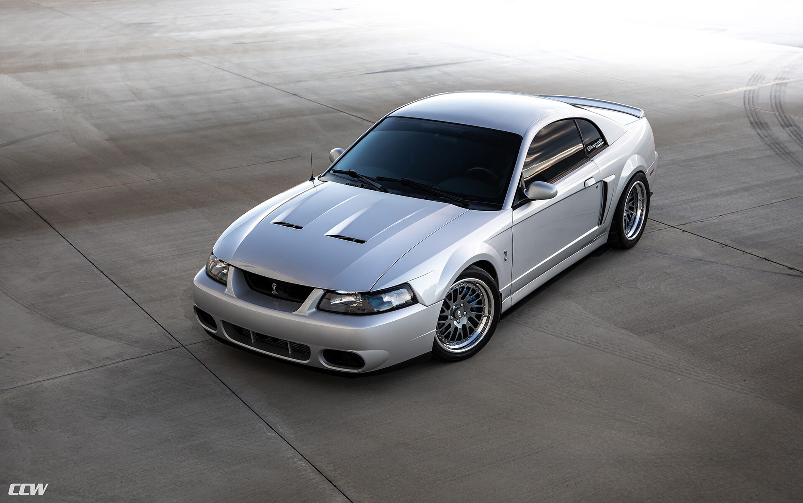
Mustang Cobra R
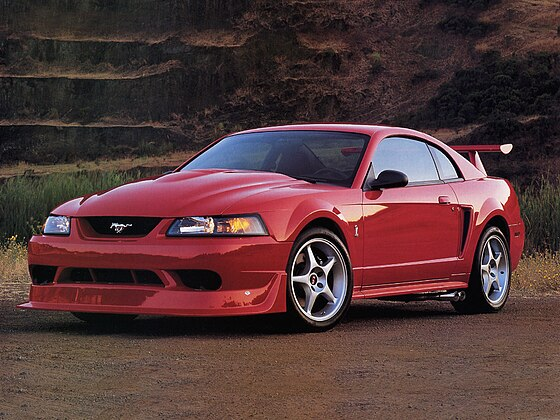Para el año 2000, el SVT Cobra R regresó con una producción limitada de 300 unidades. Como el Cobra estándar del año 2000 fue cancelado debido a problemas con los Cobras del año 1999, el Cobra R fue el único Mustang de alto rendimiento de SVT para el año modelo 2000. El nuevo Cobra R venía de serie con un motor DOHC V8 de 5409 cc (5,4 L; 330,1 pulgadas cúbicas) con una línea roja de 6500 rpm que tenía una potencia de 385 bhp (390 PS; 287 kW) a 5700 rpm y 385 lb⋅ft (522 N⋅m) de torque a 4500 rpm. Sin embargo, las pruebas de dinamómetro independientes mostraron que el Cobra R produjo una potencia en las ruedas traseras que casi coincidió con ambos números, lo que sugiere que el motor puede haber sido subestimado. El bloque de hierro fundido se basó en el bloque de 5,4 L que Ford usó en sus camiones en ese momento.Las culatas se usaron más tarde en el Ford GT 2005-2006 , aunque ligeramente modificadas.Algunas fuentes afirmaron que el motor del FPV GT australiano era muy similar al motor del Cobra R. Al igual que con los modelos Cobra R anteriores, el modelo 2000 carecía de muchas de las comodidades del Cobra estándar.Este modelo no tenía equipo de radio/audio, aire acondicionado, control de crucero o asiento trasero. Las 300 unidades producidas fueron terminadas en Performance Red con un interior Dark Charcoal con asientos tipo butaca Recaro de tela . El Cobra R 2000 tenía varias características visuales y de rendimiento distintivas que lo diferenciaban del Cobra estándar de 1999 o 2001. El capó "Power Dome" era más alto que el capó Cobra estándar y tenía branquias que se podían cortar para ayudar a reducir las temperaturas del compartimiento del motor. El alerón trasero era alto y ancho. El Cobra R estaba equipado con resortes Eibach que bajaban el auto 1.5 pulgadas en la parte delantera y 1.0 pulgada en la parte trasera.Este modelo también usaba amortiguadores y puntales Bilstein, pinzas delanteras Brembo de 4 pistones con rotores de 13 pulgadas que se enfriaban mediante grandes conductos, junto con una celda de combustible estilo carrera que sobresalía debajo del parachoques trasero estilo Mustang V6.La fascia delantera presentaba un divisor bajo y removible . Las ruedas tenían un estilo único, pintadas de plata, de cinco radios, de aleación de 18 pulgadas (460 mm) x 9,5 pulgadas (240 mm) con neumáticos BF Goodrich G-Force KD.El motor SVT construido a mano empleaba culatas DOHC especiales, un colector de admisión "estilo trompeta", árboles de levas agresivos, colectores de tubo corto conectados a catalizadores Cobra, un tubo X Bassani y un exclusivo sistema de escape de doble salida lateral Borla, que era necesario por la gran celda de combustible. Este modelo también contaba con marchas de 3,55, un diferencial hidromecánico Gerodisc con sensibilidad a la velocidad y al par motor, y una transmisión manual Tremec T-56 de 6 velocidades que estaba especialmente diseñada para carreras de aceleración o para su uso en circuitos. 296 El Cobra R 2000 estaba clasificado para alcanzar una velocidad máxima de 177 mph (282 km/h).
Mustang Mach 1
En 1994 se introdujo un Mustang de cuarta generación totalmente nuevo, el SN-95, que dejó de lado el notchback y el hatchback, que fueron reemplazados por un cupé de estilo más elegante; también estaba disponible un convertible. El rediseño de 1999 le dio un aspecto más duro con contornos más definidos. El modelo base tenía el 3.8 V6 y el GT, el 4.6 modular de 260 hp. También estaba disponible el SVT Cobra de alto rendimiento, el 5.0 V8 de 240 hp. El Mach 1 se introdujo en 2003, tenía 305 hp y suspensión revisada, entrada de aire Shaker, calcomanías Mach1 en el capó, alerón de mentón, alerón trasero, llantas estilo Magnum 500 y un pilar C rediseñado.
Mustang New Edge
El Mustang New Edge estaba disponible en varias versiones, tanto con motor V6 como V8, dependiendo del modelo. El V6 de 3.8 litros entregaba alrededor de 190 caballos de fuerza, mientras que la versión más potente, el GT, venía equipada con un V8 de 4.6 litros, capaz de generar aproximadamente 260 caballos de fuerza, lo que le brindaba un rendimiento más robusto y emocionante.
Entre las versiones más icónicas de esta era destaca el Mustang SVT Cobra, una variante de alto rendimiento desarrollada por Ford’s Special Vehicle Team (SVT). El Cobra 2003-2004, apodado "Terminator", fue equipado con un motor V8 supercargado de 4.6 litros, que producía unos impresionantes 390 caballos de fuerza y 390 lb-pie de torque. Este modelo era capaz de acelerar de 0 a 100 km/h en menos de 5 segundos, convirtiéndolo en uno de los Mustang más rápidos de su época. El New Edge no solo fue una actualización en términos de diseño y potencia, sino que también incorporó mejoras en la suspensión y el manejo. Aunque seguía utilizando un eje trasero sólido en lugar de una suspensión independiente, las actualizaciones en la geometría de la suspensión hicieron que la conducción fuera más ágil y mejor controlada, especialmente en las versiones GT y Cobra.
El Mustang New Edge ha ganado una base de fanáticos a lo largo de los años gracias a su combinación de estilo audaz, buen rendimiento y facilidad de modificación. En el mundo de los entusiastas del automóvil, este Mustang se mantiene popular por su accesibilidad y por ser una plataforma ideal para mejoras de rendimiento, especialmente la versión Cobra "Terminator", que sigue siendo muy valorada por los coleccionistas y aficionados a los muscle cars.
En resumen, el Mustang New Edge representa un importante capítulo en la historia del Mustang, fusionando el espíritu clásico del muscle car americano con un diseño más moderno y un rendimiento mejorado, lo que lo convierte en una opción emocionante tanto para los conductores cotidianos como para los entusiastas de los autos de alto rendimiento.
Versiones
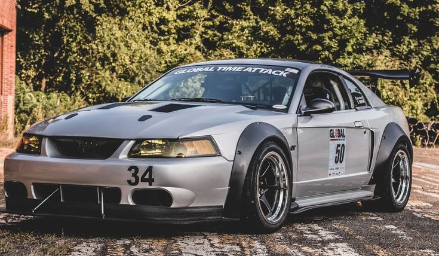 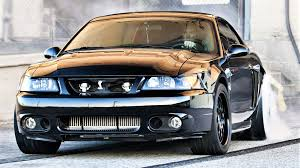 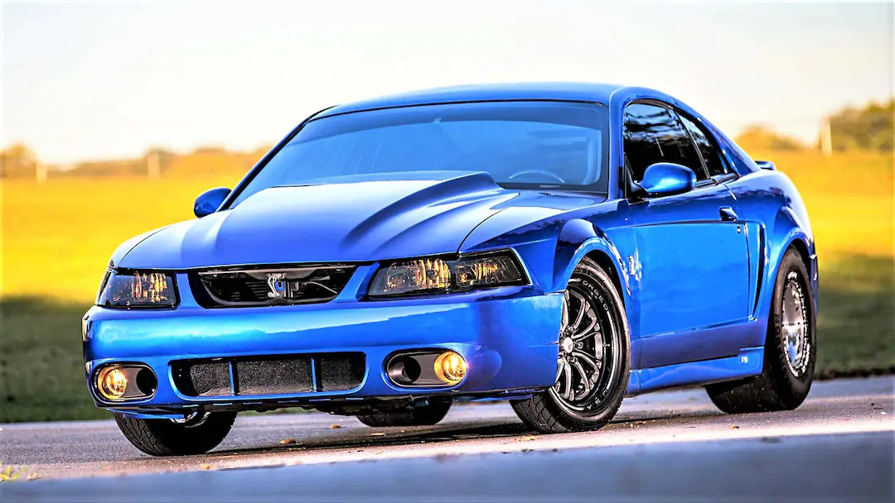 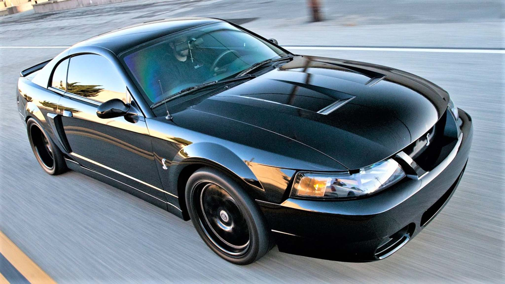 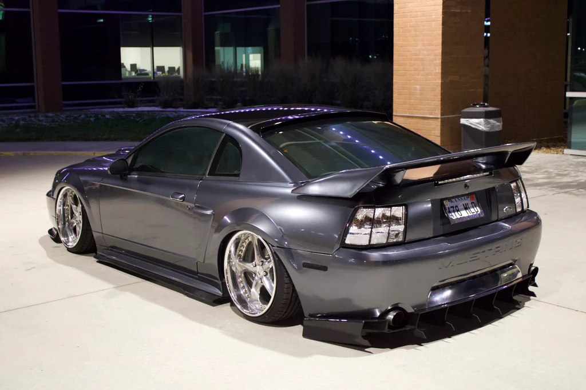 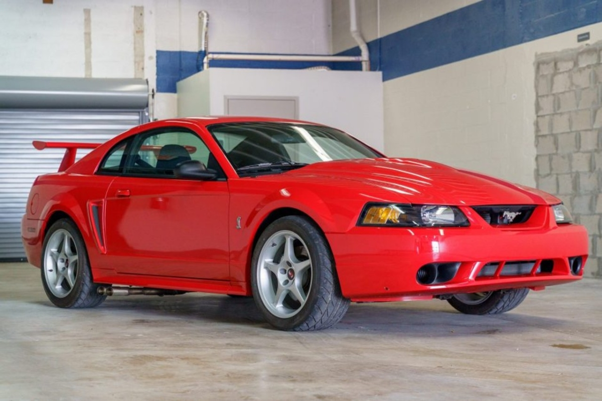
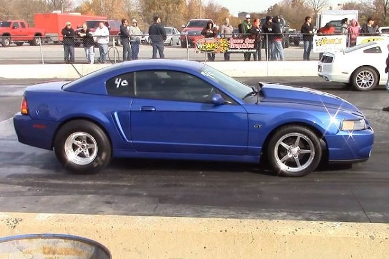
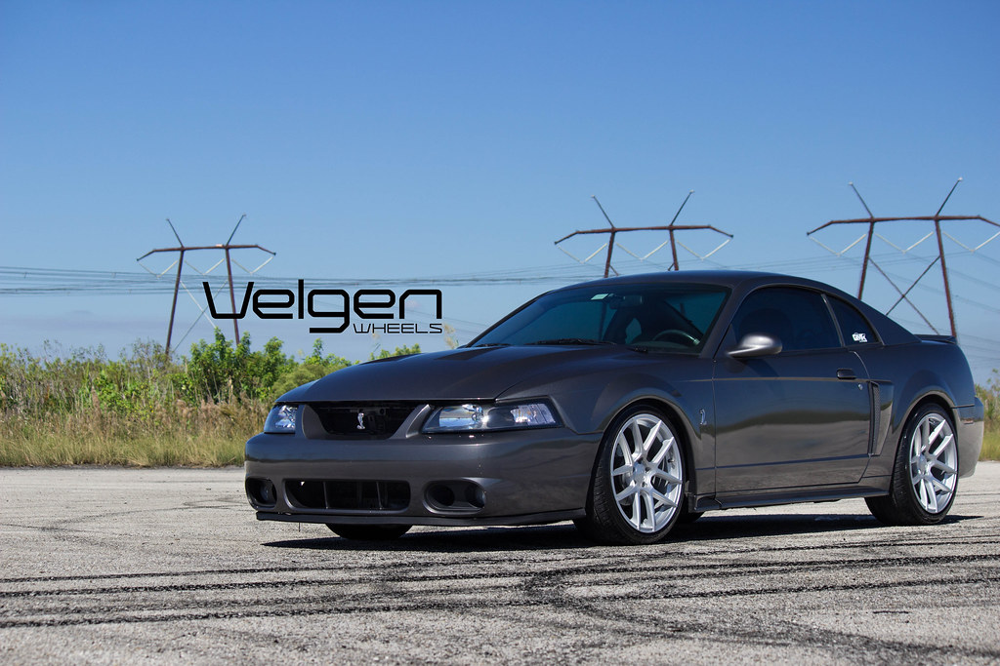
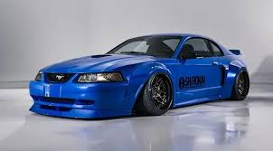
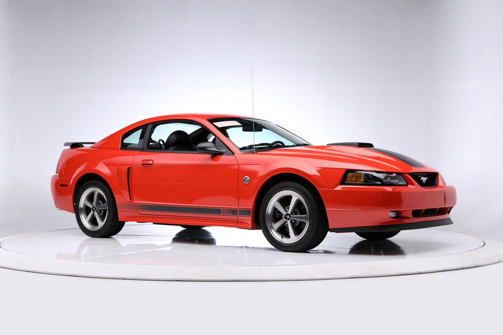
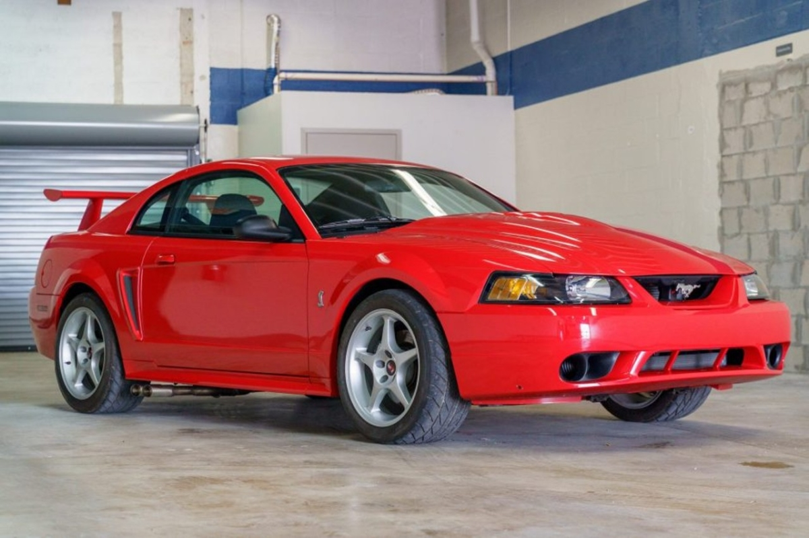
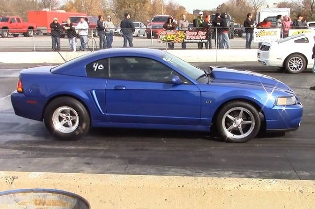
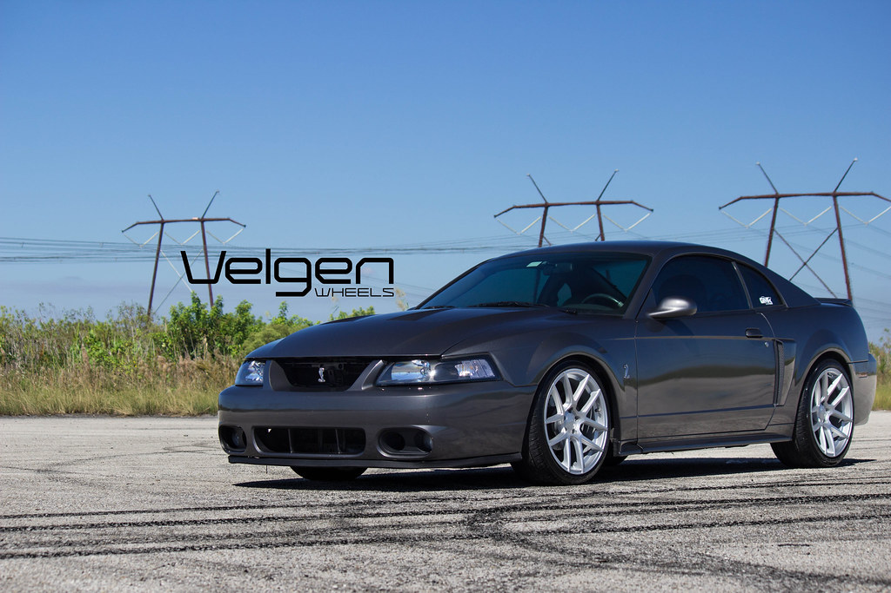
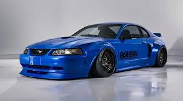
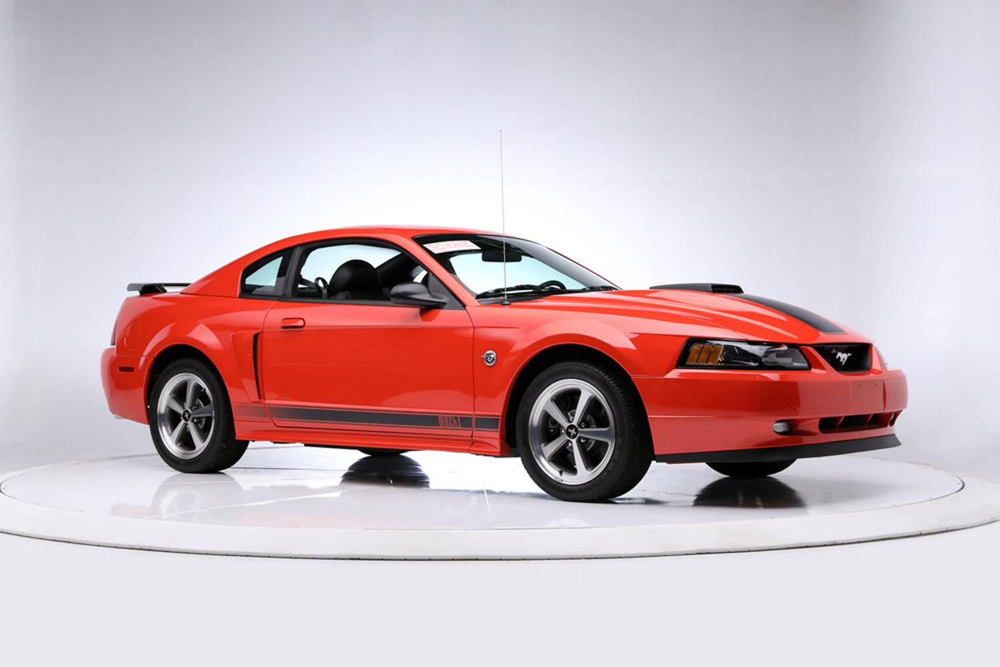